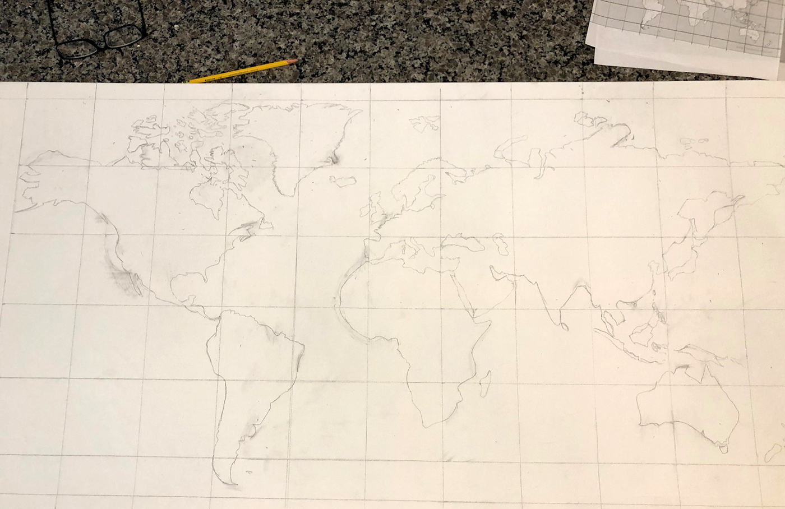
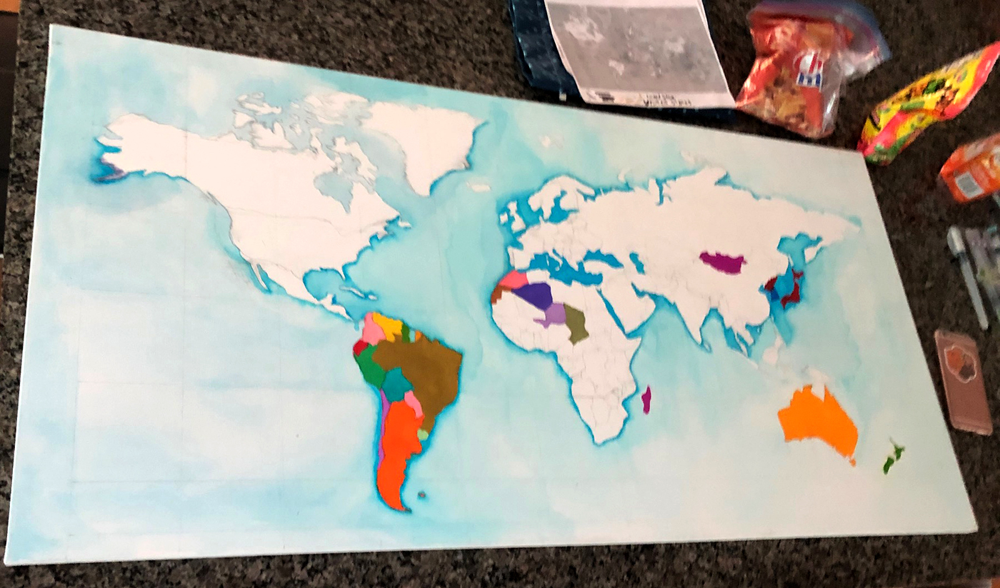
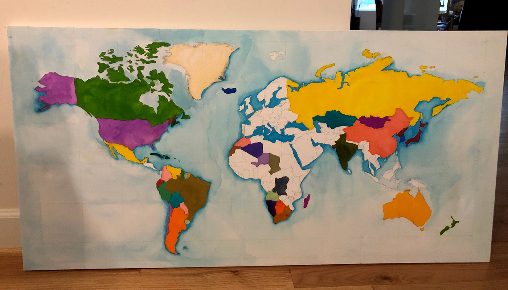
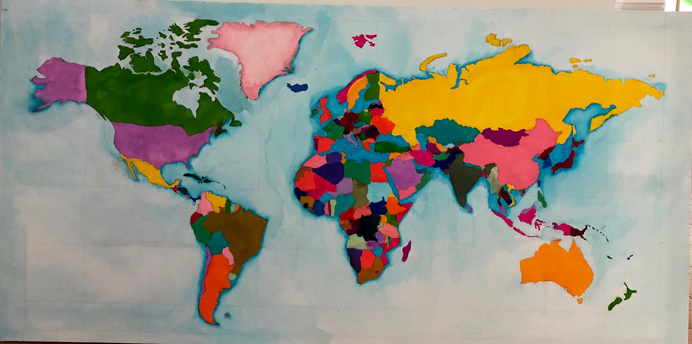
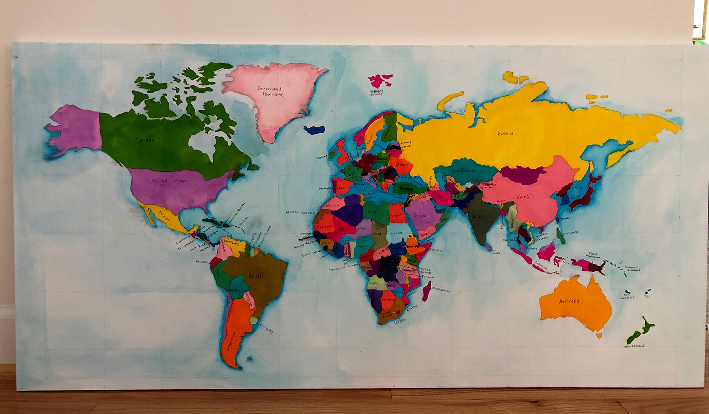

The Grid on Canvas
I started with a small print-out of the world map and drew a precise grid. By creating the same ratio grid on a large canvas, I turned a daunting empty space into a series of manageable squares.
Initial Tones
The first layers of color are the most exciting. Here, I establish the depth of the oceans and the basic foundations of the continents, following the lines set by my grid.
Developing the Landscape
With the base colors set, the world begins to take shape. This is the stage where depth is added through shading and topographical details, bridging the gap between a sketch and a painting.
Refining the Palette
Finishing the coloring process involves refining the transitions between land and sea. Every island and peninsula is now vibrantly rendered, awaiting the final layer of information.
The Final Labels
The final stage is the most meticulous: labeling every country. This transformation turns a piece of art into a functional map, providing the final layer of human geography to the natural landscape. The location of every country is now etched into my memory.